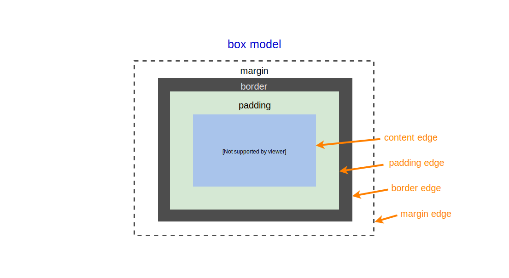

Containing block，中文常被翻譯為包含塊，它其實代表的是一個「區域」，一個由 box model 的 content edge 或 padding edge (若有設定 padding)所圍繞的範圍，它攸關元素的定位、寬高、內距與外距的計算，所以必須清楚知道元素的 containing block 是誰，才不會使畫面失控。
例如，在元素設定 width、height、padding、margin 屬性時，若屬性值給予的單位為百分比(％)，則將會以該元素的 containing block 為基準去做計算，再例如，元素的 position定位，也與該元素的 containing block 有關。

如何尋找包含塊：
一個容易犯的錯誤是直接將元素的「父層」視為該元素的 containing block，事實上，在有些情況下並非如此，像是 position: absolute 與 fixed 時。大致情況如下：
-
根元素 <html> 的 containing block 稱為 initial containing block (初始包含塊)，而在連續媒體下，initial containing block 即為 viewport (視口)。
-
若元素的
position屬性值為static、relative或sticky，則 containing block 為距離該元素最近的祖先 block container 或 formatting context (格式化上下文)的contnet edge (內容區邊緣)組成。其中，block container 並不完全等於 display: block，像是 display: inline-block 與 list-item 也會形成 block container，這部分有興趣可參考 W3C display 表格。
至於 formatting context ，其實它只是一個「環境」，大致可分為幾種環境，像是 block formatting context、flex formatting context 或 grid formatting context，之後有機會再介紹。
-
若元素
position屬性值為absolute，則其 containing block 為距離它最近且position屬性值非 static（即為 fixed、absolute、relative 或 sticky）的祖先元素的padding edge(內距邊緣)組成。
-
若元素 position 屬性值為
fixed，則其 containing block 在連續媒體下為viewport。
-
如果
position屬性值為absolute或fixed，containing block 也可能是由滿足以下條件的最接近祖先元素的內容區邊緣組成：- transform 或 perspective 屬性值不為 none。
- filter 屬性值不為 none。
來看幾個例子吧
例 1.
找出 <p> 的包含塊，並且計算出 <p> 最終的寬、高、內距與外距。
在此例子中，因為 <p> 的 position 值為預設的 static，故其包含塊為距離它最近的 block container 的 padding edge(內距邊緣)所圍繞範圍，又因 <p> 的 width、 height、margin 與 padding 單位皆為百分比(%)，所以會以 containing block，即 <section> 為基準來計算。
1 | <body> |
1 | section { |
例 2.
現在將 <section> 改為 display: inline。
找出 <p> 的包含塊，並且計算出 <p> 最終的寬度。
在此例子中，<p> 的 position 依舊是預設的 static，但是 <section> 不再是 block container，沒有形成一個格式化上下文，故 <p> 的包含塊為 <body> 內距邊緣所圍範圍。
<p> 的寬度將以 <body> 為基準計算。
1 | <body> |
1 | section { |
例 3.
包含塊有內距(padding)。
找出 <p> 的包含塊，並且計算出 <p> 的最終寬度、高度、外距與內距。
在此例中，P元素的包含塊是 <section>，因為 <section> 的 position 值非 static。
<p> 百分值會受其包含塊 <section> 的 padding 所影響。若將包含塊的 box-sizing 值設置為 border-box，就可以避免這個問題。
1 | <body> |
1 | section { |
參考資源